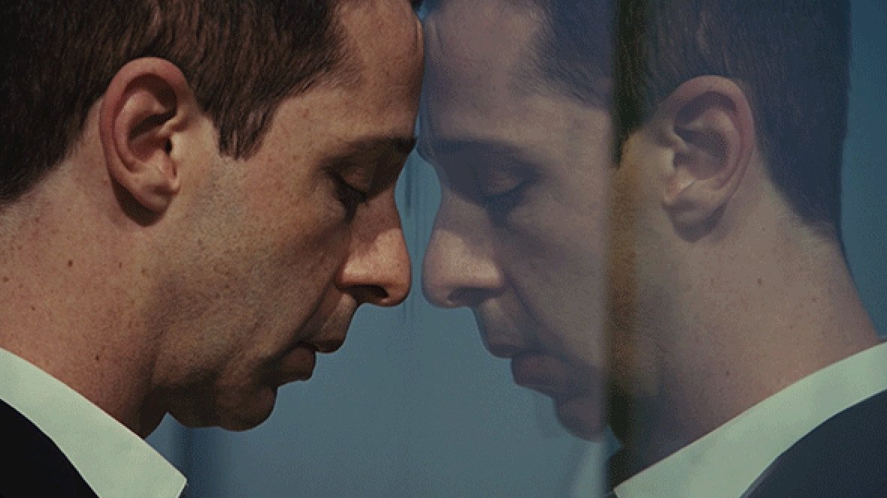
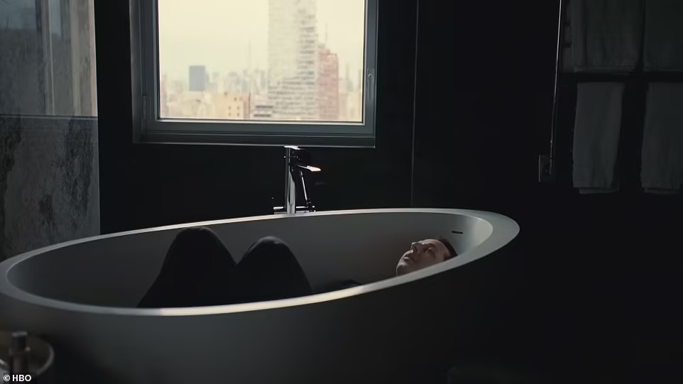
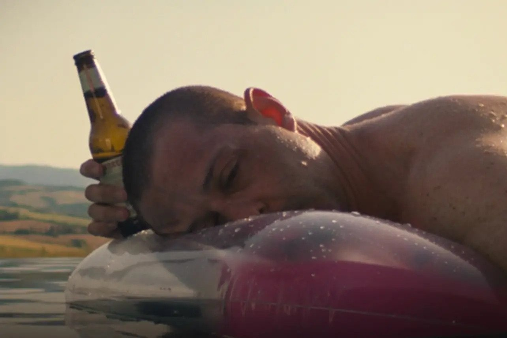

By Abby Wallace, Interactive Design & Development
We live in a golden age of entertainment — especially for self-described "sad young women." At any given time, you could pull out one of my Airpods and hear some of singer-songwriter Taylor Swift's most emotionally devastating songs gracing my ears at full volume — I'm looking at you "All Too Well (10 Minute Version) (Taylor's Version) (From The Vault)."
However, there's one slate of time where I tell Swift to hush. HBO's 9:00 pm slot on Sunday nights has been a saving grace in times of stress and strife. I truly love to unwind by watching the fictitious Roy family from "Succession" tear each other apart.
"Succession" is a household name in the American entertainment space. It remains a show you can talk to your friends and coworkers about on Monday morning and theorize what might happen next. Even those who don't watch the show have at least heard of it.
The creators of the hit show like keeping the audience in the dark on upcoming plots, which only fuels the internet chatter. Before the third season of "Succession" premiered in October of 2021, the official social media accounts released promotion posters that were all slightly different, as seen on this page. Their social media team released three variations of these posters to keep fans guessing about character alliances and the season's plot.
For a show about conflicts in business and finance, "Succession" has a surprisingly strong fanbase of young women. Ask many of us why and the answer is simple — the distraught billionaire nepo baby Kendall Roy, played by Jeremy Strong, is startlingly relatable.
For a certain subset of the chronically-online generation, Kendall Roy embodies the inherent sadness that being a teenage girl entails. Search "Succession" on TikTok, and almost immediately, hundreds of fan edits of Kendall Roy to various Mitski and Taylor Swift songs flood one's screen.
Like Kendall Roy, Taylor Swift also went to war with a corporation she used to work for. Swift and her former record label, Big Machine Records, clashed over ownership of her first six albums. This ownership feud prompted Swift to re-record her initial six albums with her new record label Republic Records.
In honor of the internet's favorite sad "baby girl," Kendall Roy, here's a timeline of Taylor Swift's studio albums from across the years as I am sure I have watched at least one Kendall Roy edit to a song from each of her 10 albums.
© Succession, HBO
© Succession, HBO
© Succession, HBO
© Succession, HBO